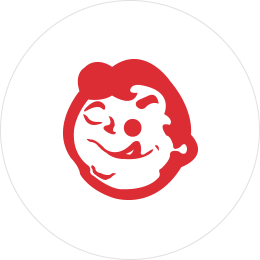

(주) 오뚜기
- CI 소개
- (주)오뚜기 임직원은 식품을 통해 인류의 건강과 행복을 추구하고 있습니다.
CI 소개
(주)오뚜기의 CI는 합심과 공존을 나타내며
개개인의 원만하고 끈질긴 생명력을 포함하고 있습니다.
- 외곽의 원형
- 전 오뚜기인의 합심과 공존을 나타내며 오뚜기인 개개인의 원만하고 끈질긴 생명력을 포함하고 있습니다. 상부의 작은 반원과 하부의 큰 반원이 알맞게 조화를 이뤄 안정된 느낌을 주며, 어떠한 방향에서 압력이 주어지더라도 다시 원위치로 돌아오는 오뚜기 특유의 복원력과 외유내강의 기품을 엿볼 수 있습니다. 한편, 그러한 유연성은 날로 발전해 가고 변화에 가는 사회에 적절히 대응하여 소비자의 욕구를 충족시키며 또한 욕구를 창출하는 적극적이며, 창의적인 기업정신을 반영합니다.
- 컬러 시스템
- 황색은 주색이며 금적색은 보조색으로 활용되고 있습니다.
황색은 색 중에서 최고로 빛을 발하는 색이며 화려하고, 매우 밝으며 젊고 활발한 외형적인 성격을 가지고 있습니다. 또한 황색의 의미는 소비자에게 온화한 분위기로써 친밀감을 전해 줄 수 있는 따뜻한 계열의 색상으로 나타나고 있습니다. 적색은 끝없는 정열을 나타내는 색이며 특히 금적색은 강렬한 진출색(빨강·주황·노랑처럼 같은 위치에 놓여 있는데도 앞으로 드러나 보이는 색상)으로써 적극적이고 능동적인 오뚜기인의 근무자세를 나타내고 있습니다. 식품회사의 제품은 구매시점에서 포장디자인이 매우 중요하게 나타납니다. 포장디자인에 있어서 색채는 재료, 구조, 형태 및 표면의 바탕이 레터링과 함께 조형의 중요한 요소이지만 그 시각적 효과라는 점에서 색채가 가장 강력한 소구성을 가지고 있습니다. 포장에 있어서 색채가 보는 사람에게 끄는 힘을 주게 하는 것도 색채의 이미지가 제품의 성격과 결부되기 때문입니다. 따라서 색은 상품의 이미지를 가장 효과적으로 전달하는 힘을 가지고 있습니다.
황색과 적색이 조화를 이룬 포장디자인에 있어서는 황색이 잘 살 수가 있습니다. 또한 황색은 색 중에서 사람에게 가장 잘 기억에 남는 색으로 나타나고 있습니다.
- 
- 미소짓는 어린이의 얼굴
- 미소짓는 어린이의 귀여운 표정처럼 항상 친절과 정다움으로 소비자를 대한다는 기업이념을 표현합니다. 어린이는 바로 우리사회의 미래이며 희망입니다. 그들의 티없이 맑은 웃음을 대하면 보는 사람도 따라 웃게 되기 마련입니다. 거짓 없는 진지한 태도로 소비자 앞에 서서 긍지와 자부심을 갖고 떳떳하게 기업을 알리려면 마땅히 최고 품질을 추구하는 기업정신이 선행되어야 합니다. 오뚜기의 웃음 뒤에는 바로 소비자의 건강에 대한 약속과 최고의 품질을 추구하는 오뚜기의 정신이 스며있습니다.
- 입맛을 다시는 모습
- 통통한 얼굴을 한 건강한 어린이의 입맛 다시는 표정은 최고의 맛을 추구하는 기업정신을 나타낸 것입니다. 보기만 해도 먹고 싶어지는 식품, 먹을수록 더욱 가까이 하고 싶어지는 식품을 만들어 내게 될 때, 기업도 함께 성장하게 되는 것입니다.
건강한 어린이의 입맛 다시는 표정은 한편으로 식품의 가능성을 상징하고 있습니다. 품질과 영양을 추구하되 소비자에게 시대에 앞선 식품을 제공할 때 그 식품은 제 기능을 다하게 됩니다.